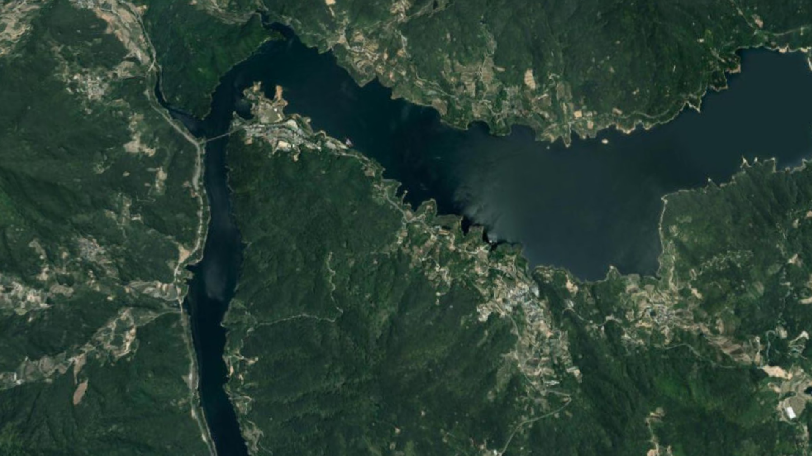

Digital GARAM
로그인
레이어
모니터링
모니터링
닫기
다목적댐 수문정보
용수정용댐 수문정보
보수문정보
댐 - 하천 모식도
한강
금강
영산강
섬진강
낙동강
과거 수문자료조회
조회일시
검색하기
홍수
홍수
닫기
댐수문
하천수리
강우유출
염분분석
가뭄
가뭄
닫기
가뭄모니터링 및 전망
수원별 가뭄 모니터링
가뭄대응
시뮬레이션
물순환
물순환
닫기
물이용
물순환
물수지
물건전성
수질
댐안전
업데이트
도움말
닫기
상세수문현황
유량현황
수위현황
유관기관
시/군/구
대권역
8월 15일 (토) 3:14PM
최고 31° / 최저 26°
리셋
이동
이동
그래프
면적
거리
포인트
메모
나침판
확대
축소
항공뷰
2D
3D
한강
금강
낙동강
섬진강
영산강
수위국
우량국
제약사항
배수시설
CCTV
화상회의
경보국
전북 순창군 동계면 어치리
35’9.89’ - 6.7463”
N
-82’30.00’0.0000
E
26889486.19m
elev
